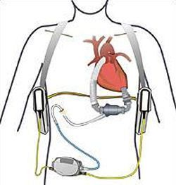

| El corazon |
En los años 90, Berlin Heart logró un gran avance a nivel mundial con el desarrollo de EXCOR® Pediatric, la primera bomba cardíaca creada específicamente para niños. La compañía buscaba, por aquel entonces, un socio de confianza que la ayudara a desarrollar los compresores necesarios para el accionamiento fijo de la bomba (Ikus). Berlin Heart encontró este socio en la compañía fabricante de bombas de diafragma KNF en el año 1993.
Se coloca sobre el cuerpo del paciente, y está conectada al corazón y a los vasos sanguíneos mediante cánulas. Un accionamiento genera presión y vacío a través de compresores, lo cual mueve la membrana de tres capas que divide la bomba de sangre en dos cámaras, poniendo así en movimiento el flujo de sangre.
